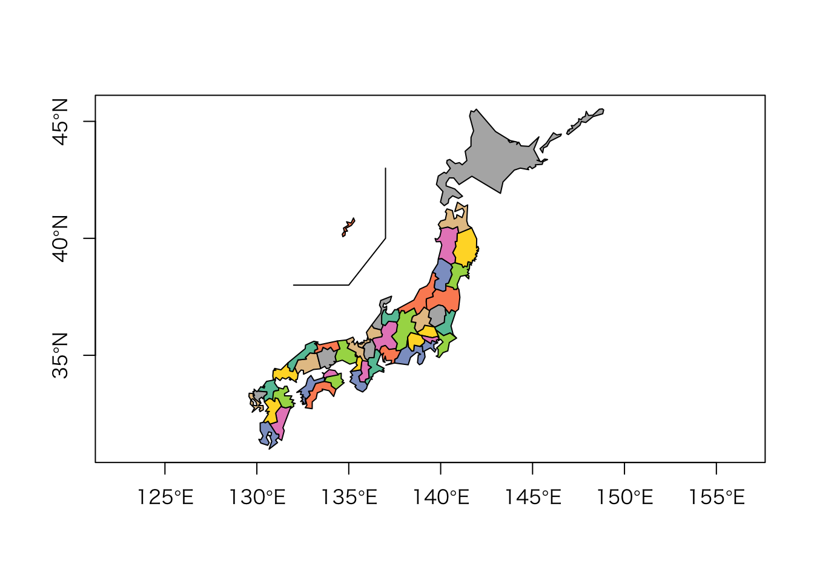
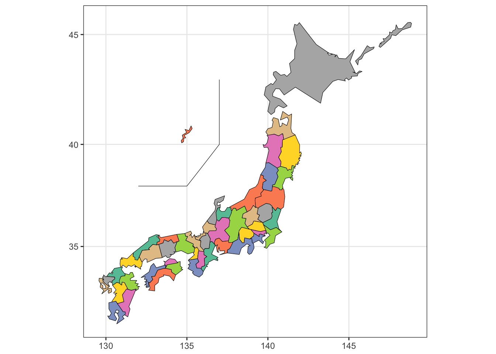
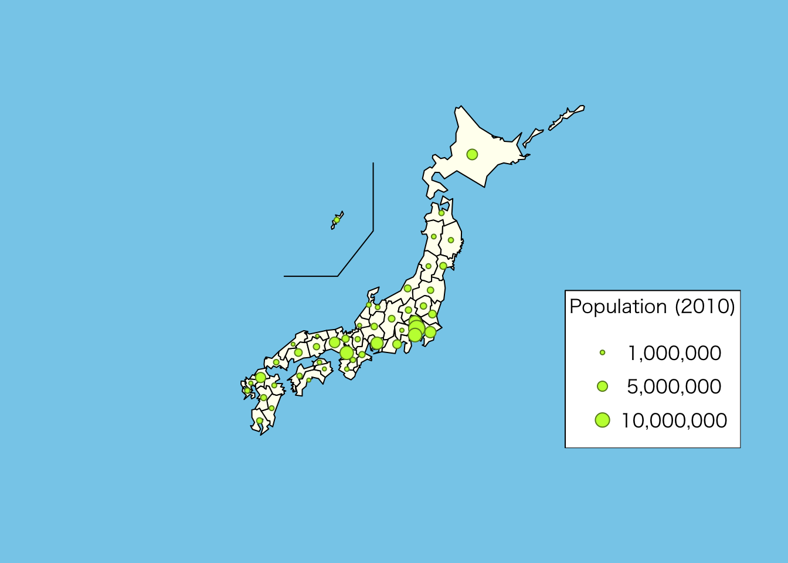
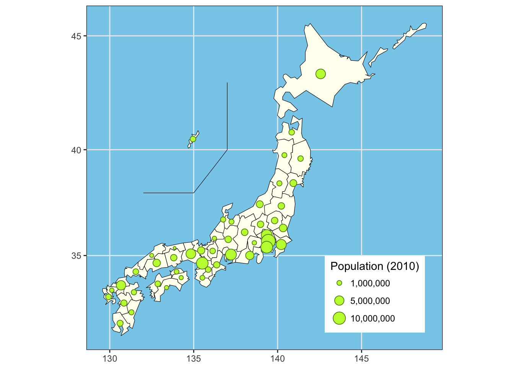
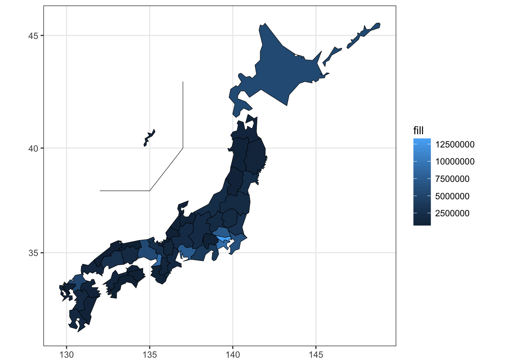

都道府県の塗り分け地図を簡単に描くには，NipponパッケージのJapanPrefecturesMap()関数が便利です。
library(Nippon)この関数を修正して，これと同じような図を，ggplot2を利用して描くggJapanPrefecturesMap()を作りました。
library(devtools)
source_gist("89049df857b1eff34e959416ea2146f4", filename = "ggJapanPrefecturesMap.R")JapanPrefecturesMap()関数のヘルプにあるExamplesを実行してみます。
if (require(RColorBrewer)) {
cols <- rev(brewer.pal(8,"Set2"))
}else{
cols <- gray.colors(8)
}
JapanPrefecturesMap(col = cols, axes = TRUE)
このように，とても簡単です。 ggJapanPrefecturesMap()でも，同じように地図を描くことができます。
ggJapanPrefecturesMap(col = cols)
HelpにあるもうひとつのExampleは，人口を円の面積で表した地図です。
require(foreign)
dat <- read.dbf(system.file("shapes/jpn.dbf", package="Nippon"))
op <- par(bg = "skyblue")
p <- JapanPrefecturesMap(col = "ivory")
col <- c("olivedrab4", "olivedrab1")
pop <- dat$population / 1e+7
symbols(p, circles = sqrt(pop / (2 * pi)), inches = FALSE,
fg = col[1], bg = col[2], add = TRUE)
idx <- c(1e+6, 5e+6, 1e+7)
pos <- legend("bottomright", legend = format(idx, scientific = 10, big.mark = ","),
title = "Population (2010)", bg = "white", x.intersp = 2, y.intersp = 1.5)
symbols(pos$text$x - 1, pos$text$y, circles = sqrt(idx / 1e+7 / (2 * pi)),
inches = FALSE, fg = col[1], bg = col[2], add = TRUE)
par(op)これをggJapanPrefecturesMap()関数を使って再現してみます。
この関数は戻り値として，plotとcoordinatesの2つの要素を持つリストを返します。 このplotを加工して，地図を修正することができます。 また，関数の引数にsilent = TRUEを与えると，関数を実行したときには地図を描画しませんが，戻り値としてplotは得られます。
library(scales)
g <- ggJapanPrefecturesMap(col = "ivory", silent = TRUE)
dat <- g$coordinates
dat$pop <- read.dbf(system.file("shapes/jpn.dbf", package="Nippon"))$population
g$plot + geom_point(data = dat, aes(x = long, y = lat, size = pop),
shape = 21, colour = col[1], fill = col[2]) +
scale_size_continuous(breaks=c(1e+6, 5e+6, 1e+7), labels = comma_format()) +
theme(panel.background = element_rect(fill = "skyblue"),
legend.position = c(0.95, 0.05), legend.justification = c(1, 0)) +
labs(size = "Population (2010)")
また，関数にcolではなくfillとして数値ベクトルを与えることもできます。
ggJapanPrefecturesMap(fill = dat$pop)